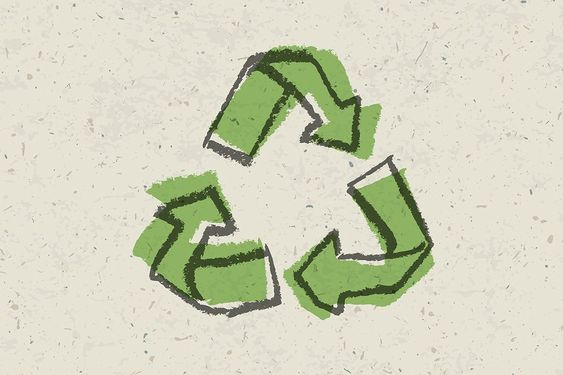

재활용 방법
종류별 분리수거 꿀팁을 제공합니다.
종류별 분리수거 꿀팁을 제공합니다.
성남시의 재활용 시설을 보여줍니다.
환경 친화적 브랜드와 인증 마크를 소개합니다.
환경 친화적 캠페인의 사례를 소개합니다.
- 비나 물에 젖지 않아야 한다.
- 비닐 코팅이 된 광고 전단지가 섞이지 않아야 한다.
- 코팅 여부가 헷갈리면 손으로 쉽게 찢어지는 종이를 분리수거한다.
- 비닐코팅 표지, 스프링, 스테플러 심, 운송장, 비닐 테이프 등을 제거 후 배출한다.
- 분쇄된 종잇조각도 종이류에 속한다.
- 종이컵, 종이팩, 멸균팩은 다른
종이류와 섞이지 않게 배출한다.
*종량제봉투에 버릴 종이류: 영수증, 은박지, 벽지, 나염지, 인화지, 부직포, 기름종이(트레이싱지), 식품용 유산지,
일회용 기저귀나 생리대, 사용한 휴지
- 입을 수 없는 옷은 깔끔한 상태로 폐의류 전용 수거함에 버린다.
- 수거함이 없을 경우 종량제봉투에 배출한다.
*종량제봉투에 버려야 하는 헌 의류: 한복, 담요, 솜
베개, 카페트, 가죽제품, 방수 코팅된 옷, 구두, 샌들, 슬리퍼, 머플러, 모자
- 가능한 한 압착하여 부피를 줄인다.
- 알루미늄 뚜껑은 고철로 분리 배출한다.
- 페트병 수거함이 따로 있을 경우 페트병만 따로 모아 배출한다. 없을 땐 플라스틱류에 넣는다.
- 플라스틱류와 섞이지 않게 투명한 봉지로 배출한다.
- 필름, 랩, 뽁뽁이, 세탁소 비닐, 분리배출 표시가 없는 비닐 등도 모두 비닐류로 배출한다.
- 비닐과 종이가 섞인 쌀 포장재,
사료 포장재 등은 분리배출 표시에 따라 배출한다.
*종량제봉투에 버리는 비닐류: 양파 망, 택배 끈, 고무장갑 등
- 에어로졸, 부탄가스 통, 살충제 통 등은 통풍이 잘 되는 장소에서 캔 몸통에 구멍을 뚫은 후 배출한다.
- 알루미늄 호일은 종량제봉투에 버린다.
- 전용수거함에 배출하거나 없을 경우 고철류를 따로 묶어서 금속캔 수거함에 배출한다.
- 페인트, 오일 통 등은 재활용이 되지 않는다.(페인트는 생활계 유해폐기물, 통은 종량제봉투에 버린다.)
- 스테인리스 텀블러라도 뚜껑, 밑바닥 등에 타 재질이 사용되었다면 재활용이 안 된다.
- 종이 라벨은 뜯지 않고 배출해도 된다.
- 소주, 맥주 등 빈용기 보증금 대상 유리병은 상점에 반납하고 보증금을 환급 받는다. 보증금 환불 거부 신고시 최대 5만원까지 보상받을 수 있다.
빈 농약병은 다른 병류와 섞이지 않게 따로 마대에 모아 배출한다.
*종량제에 버릴 유리: 거울, 안경, 깨진 유리(신문지나 자투리천으로 감싼 후 종량제 봉투에 배출한다.), 내열식기류,
유리 냄비뚜껑, 크리스탈 유리 제품
- 양념이 묻어 있는 스티리폼은 종량제봉투에 버린다. 컵라면 용기는 세척 가능하면 분리수거, 불가능하면 종량제봉투에 버린다.
- 개별 과일 받침 스티리폼(과일 난좌)은 종량제봉투에 버린다.
폐스티리폼은 플라스틱 및 비닐류와 구분하여 별도의 전용 수거함에 배출한다. 전용 수거함이 없을 경우 흩어지지 않도록 묶어서 배출한다.
- 음식물 건조 망에 음식물 쓰레기를 말려 버리면 양도 줄고 냄새도 안 난다.
*음식물 쓰레기가 아닌 것(지자체 주민센터별로 상이): 딱딱한 껍데기, 씨, 뼈다귀, 한약재 찌꺼기, 된장,
고추장 등의 장류
- 가전제품 무상방문 수거 서비스 www.15990903.or.kr
- 폐가구, 전기장판, 전자악기는 주민센터에 대형폐기물 신고 후 수수료를 납부하고 배출한다.
- 기름(기계): 판매처, 구입처 문의
- 엔진오일, 윤활유, 자동차 부품, 타이어: 카센터 등 구입처에 배출
- 의약품: 가까운 약국 전용수거함에 배출
- 폐토너 및 카트리지: 재생 가능 품목과
아닌 품목이 있으니 토너 수거업체에 문의해 재생 가능한 경우 재활용, 그렇지 않을 경우 종량제봉투에 배출
- 건전지 및 형광등, 전구: 폐건전지 및 폐형광등 수거함에 배출
① 신흥이re100 (신흥2동 98번지)
② 신흥삼re100 (신흥3동 행정복지센터)
③ 태평사re100 (태평4동 1546)
④ 복정re100 (복정동 675-1)
⑤ 태평사re100-2호점 (태평4동 행정복지센터)
⑥ 수진일re100 (수정커뮤니티센터)
⑦ 단대논골re100 (민방위 안전체험센터)
⑧ 태평일re100 (태평1동커뮤니티센터)
⑨ 산성re100 (산성종합사회복지관)
① 성남동re100 (성남동 행정복지센터)
② 금광이re100 (금광2동 행정복지센터)
③ 은행일re100 (은행1동 행정복지센터)
④ 상대원일re100 (상대원1동 복지회관)
⑤ 모란re100 (성남동성당)
⑥ 은행이re100 (은행2동 1361)
⑦ 하대원re100 (하대원동 289)
⑧ 성남시청re100 (성남시청)
① 이마트분당re100 (이마트분당점)
② 판교re100 (판교역 지하광장)
③ 운중re100 (운중동 1027-7)
④ 정자동re100 (정자동 79-3)
⑤ 야탑그린센터re100 (야탑동 404(1층))
프라이탁은 1993년 마커스 프라이탁, 다니엘 프라이탁 형제에 의해 설립되었다. 버려진 천막, 자동차 안전벨트, 화물차 방수포 등을 가방으로 재활용하는 스위스 업체.
대표적인 업사이클링 사례라고 볼 수 있다. 버려진 천막을 재활용해서 만들기 때문에, 똑같은 제품이 없다. 각 제품은 이케아처럼 이름이 붙어있다.
2018년 영국에서 처음 시작된 플라스틱 포장재 반대 캠페인이다. 돈 내고 쓰레기까지 사고 싶진 않으니 제발 포장 좀 줄이라고 요구하는 시민 직접 행동이다.